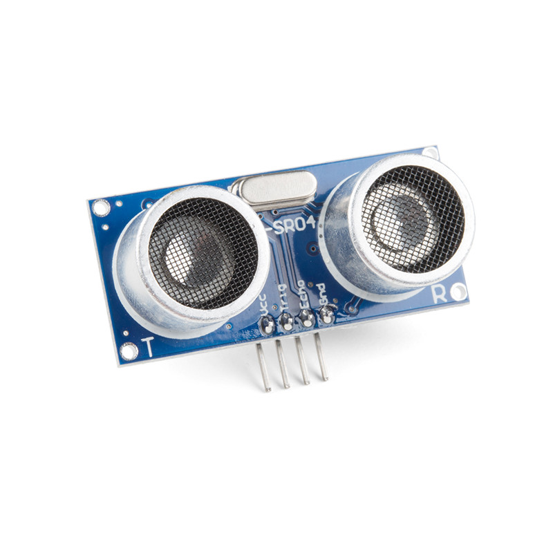

🎯 The Ultrasonic Sensor (HC-SR04) measures distance using sound waves (like a bat 🦇).
📏 It can measure from about 2cm to 400cm with good accuracy.
⚡ It works by sending an ultrasonic pulse (Trigger) and waiting for the echo to return.
🔌 It has 4 pins:
VCC → 5V
GND → Ground
TRIG → Trigger pin
ECHO → Echo pin
🚀 It’s an INPUT sensor since it sends distance data to Arduino.
